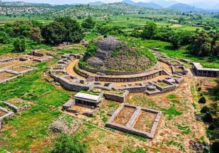

<div class="portfolio-single-load clearfix">
    <div class="custom-full-width-box">
        <div class="custom-container">
            <div class="custom-row align-items-center">
                <div class="custom-image-column">
                    
                </div>
                <div class="custom-text-column">
                    <h2 class="custom-heading">Taxila, a UNESCO World Heritage Site</h2>
                    <p class="custom-paragraph">
                        Explore the ancient ruins of Taxila, a UNESCO World Heritage Site renowned for its rich history and archaeological significance. Dating back to the 6th century BCE, Taxila served as a major center of learning and commerce in ancient Gandhara, attracting scholars and traders from across the region. With over 50 archaeological sites spanning several centuries, including Greek, Persian, and Buddhist influences, Taxila offers a fascinating glimpse into the multicultural tapestry of ancient South Asia.

                    </p>
                </div>
            </div>
        </div>
    </div><!-- .custom-full-width-box end -->

</div><!-- end single-project -->
